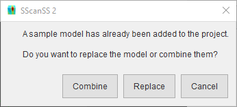

Insert Sample¶
Sample models may be imported from a 3D model file, or creating from primitives. Both options are detailed below.
Import a 3D model from file¶
The 3D model for a Sample may be imported from ASCII/binary STL files or Wavefront OBJ files. Click Insert > Sample > File and browse to the location of the 3D model and select it. The mesh will be cleaned (repeated vertices and faces with zero area will be removed) and the model will displayed in the graphics window.
Tip
STL files in ASCII format will take more time to load than binary files but performance after loading will not be affected.
Create a model from primitives¶
Simple models may be generated from primitives, e.g. cuboids, spheres, tubes, etc. Click Insert > Sample > primitives and select the desired primitive. Type in the required parameters for defining the primitive and click the Create button.
{kind=link}
Tip
Use the  button to quickly switch to another primitive.
button to quickly switch to another primitive.
Add another model¶
In some cases, a second model may be needed to properly approximate the sample or a holder. After adding the first sample, to add a second model simply follow the steps above for file or primitive, you will be asked if the new model should replace the current one or be combined with it, click Combine to add a second or more samples.
{kind=link}
Note
Clicking Replace will swap all samples with the new one. To replace a single sample, delete it and insert the replacement.
Managing samples¶
Basic sample management can be performed via the sample manager. The sample manager will be opened when a new sample is added, if the sample manager is closed it can be opened by selecting View > Other Windows > Samples in the menu. Samples can be merged, deleted or designated as main sample from the manager, and these operation can be undone (Ctrl+Z) if needed. The sample manager displays a list of sample names, primitive generated samples can be named on creation while imported samples will be given a name generated from its filename. Selecting a sample from the manager will cause the 3D model to be highlighted in the graphics window, this can be used to identify a sample if the name is unfamiliar.

Merge samples¶
Select a least two samples from the manager and click the button.
{kind=link}
Delete samples¶
Select one or more samples from the manager and click the  button.
button.
Change main sample¶
The main sample is the first one in the sample list. The main sample is only necessary during path length calculations when multiple samples are present. To change the main sample, select the desired sample and click the button.
Export a sample¶
The 3D model for a Sample can be exported from project file to a STL file. Click File > Export… > Samples in the main menu, navigate to the desired save location in the file dialog, enter a name for the file and press the Save button. If the project contains multiple samples, the sample export dialog will be opened, select the name of the desired sample from the list, click the Ok button, and proceed as before.